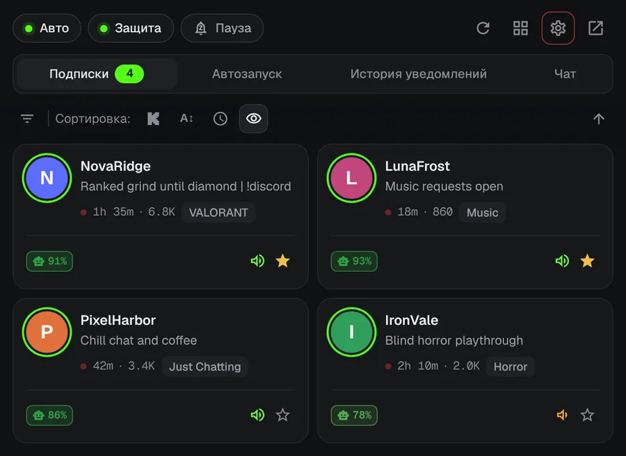
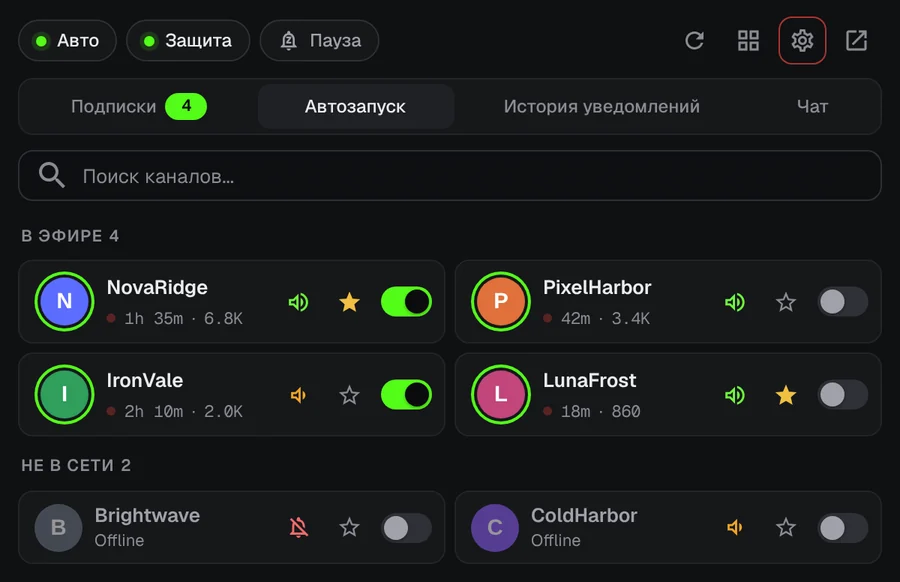
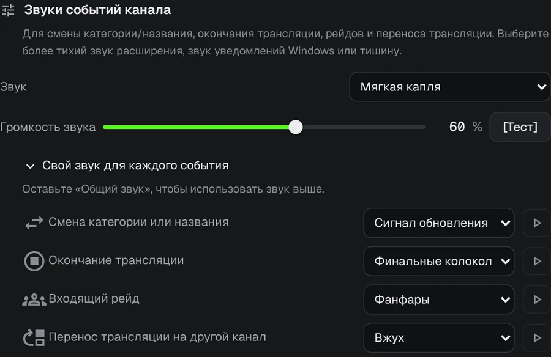
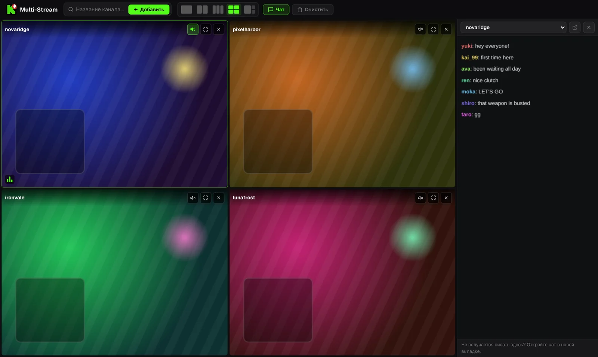

Больше не пропускайте начало стрима на Kick.
Любимый стример запускает стрим в 3 часа ночи. KickAlert присылает уведомление на рабочий стол в ту же секунду, даже если вкладка Kick закрыта. Бесплатно, без ограничения по каналам и без слежки.
Скоро в Edge и Opera
 KickAlert
KickAlertПопробуйте. Нажмите на колокольчик.
Эти каналы сейчас офлайн. Включите колокольчик у одного из них и посмотрите, что произойдёт, когда начнётся стрим.
Мгновенные уведомления
KickAlert слушает подключение Kick в реальном времени, поэтому уведомление приходит в момент начала стрима, а не через несколько минут. Выберите звук для каждого канала, настройте режим «Не беспокоить» или поставьте всё на паузу до утра.

Автозапуск
Выберите каналы, которые должны открываться сами. Стрим открывается в новой вкладке сразу после начала, без дублей, а вкладка может закрыться, если рейд переносит стрим на другой канал.

Всегда в курсе событий
Для рейдов, окончания стрима, смены категории и перенесённых стримов можно настроить отдельное уведомление и отдельный звук для каждого канала.

Радар чата
Получайте уведомление, когда ваше имя или выбранное слово появляется в одном из отслеживаемых чатов (до 5), даже если Kick закрыт. Фильтры чата скрывают спам и распознают слова, написанные похожими буквами.
До четырёх стримов в одной вкладке
Стримы запускаются без звука. Включите звук нужного одним щелчком. Чат находится в боковой панели.

Содержимое стримов показано для примера.
Ваши данные остаются в браузере
- Никакой аналитики и слежки
- Связывается только с kick.com
- Каждое разрешение объясняется при первом запуске
- Исходный код открыт на GitHub
Вопросы
KickAlert бесплатный?
Да. Все функции бесплатны, а число каналов, на которые вы подписаны, не ограничено.
Нужно ли держать Kick открытым?
Нет. KickAlert работает в фоне и присылает уведомления, даже когда ни одна вкладка Kick не открыта. Достаточно войти в Kick в том же браузере.
Я установил расширение, но уведомлений нет.
После новой установки уведомления по каналам выключены, чтобы вас не завалило сообщениями. Включите колокольчик у нужных каналов или сразу для всех в Настройках. Проверка «Будут ли уведомления от этого канала?» в настройках каждого канала покажет, что ещё может блокировать уведомление.
В каких браузерах оно работает?
Сейчас в Chrome и Firefox, Edge и Opera на подходе. Brave, Vivaldi и другие браузеры на Chromium могут установить его из Chrome Web Store.
Установить KickAlert
Скоро в Edge и Opera